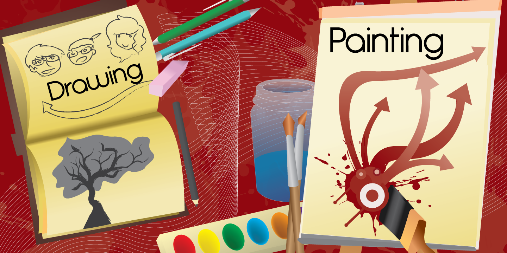
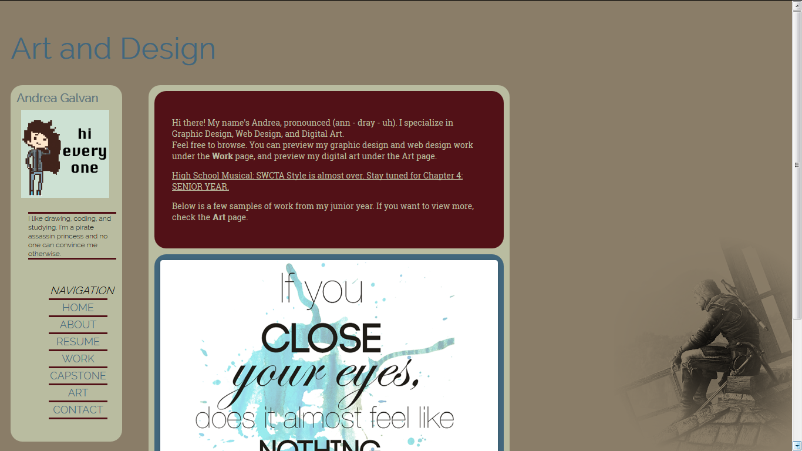

Work
Here you can view some of my best work from my high school career. At SWCTA, everything is categorized into 6 tenets - Content Knowledge, Presentation Skills, Teamwork/Collaboration, Use of Resources, Work Ethic, and Writing Skills. These don't really matter outside of the school, but each project is categorized anyway.
Stop Motion Animation
Content Knowledge - Junior Year
Description: The last major project for Media for the Web. In partners, create a stop-motion animation at least one minute long.
Reflection: My partner and I created the cutest animation ever! How it works is it's a sticky note arcade. It took a lot of time and it was 100% worth it.
Not available for viewing yet :)
Typography Project
Content Knowledge - Junior Year
Description: Give a five minute presentation on a font and do something creative with it.
Reflection: I worked really hard on this presentation and it turned out great. I made a process video for the collage I created using the font, and it looks amazing.
View the presentation here. and view the video here.
Illustrator Banner
Content Knowledge - Junior Year
Description: Make your surroundings less boring using Adobe Illustrator. If everything goes smoothly, these poster boards will be up for a long time.
Reflection: The banner turned out amazing! I'm really proud of all the effort I put into it. It's hanging up right now and as I type, I'm looking right at it and I'm smiling.
Check it!

Animation I - Hunger Games Flash Project
Content Knowledge - Sophomore Year
Description: With a partner, animate a chapter of The Hunger Games (in Flash CS6) for a teacher's English class. It must accurately portray the chapter.
Reflection: Since we had nine weeks to work on this project, I think my partner and I did pretty well. We were among the few who actually managed to finish the entire project with a day to spare. We wasted little to no time working and we ended with a very nice result.
View the presentation (Prezi) and final product here. If that doesn't load, view here.
Web Development 2 - Congressional App Challenge
Presentation Skills - Junior Year
Description: Use all your jQuery skills to create an app, and enter it into a contest under Congress. Our idea started with my dreams of seeing my favorite boy bands in concert, so we made an app that lets the user view which concerts are available in the area.
Reflection: The app turned out really cute and I'm incredibly proud of all the effort put into it. There's so much content and there's not much styling, but it's an app - there's not much styling really needed.
View here.
Media for the Web - Autism Awareness Animation
Presentation Skills - Junior Year
Description: Help change an autistic student's life forever. Create a website and an animation about autism awareness.
Reflection: This is by far the most rewarding experience I've ever been part of. It opened my eyes so much and I learned so much about autism. I also learned a lot about my capability with animation and patience. Apparently, I am an incredibly patient person who will do whatever she needs to do in order to meet deadlines and create the best project she can.
View here.
We've been recognized by the media! View here, here, and here.
We won an award in the NV-CUE contest!
Web Development 2 - 2013 Portfolio Design
Presentation Skills - Junior Year
Description: For midterm exams, have a completely updated portfolio. Now's your chance to make a new design and show off your best work.
Reflection: I don't like the design anymore, but I didn't know I was capable of making such a cute one! Even though it was inspired by Assassin's Creed, it still turned out really nice. I think it's more suited for a blog now, so I'm trying to come up with a more mature design.

AP United States History - What Makes You Super Glue - 1950s Advertisements
Presentations Skills - Junior Year
Description: Find an invention from the 1950s and create an advertisement for it. You can use any medium you want.
Reflection: I decided to do an animation with a song parody for What Makes You Beautiful by One Direction. It turned out really nice, and it has over 400 views on YouTube! I'm very happy with my work ethic and I'm even more proud of my final product.
View the video here.
Web Development 2 Lab - Girls in Tech Website Design/Spring PBL
Teamwork/Collaboration - Junior Year
Description: It's Spring PBL time again, and this year's challenge is to design a website that will best represent the school for the Girls in Tech 2014 conference. Time is limited and the site needs to have all of the workshops, sponsors, and people involved listed on it.
Reflection: This site had so much work put into it and I'm glad it turned out the way that it did. The design turned out amazing and my teacher told us that the public loves it!
View the site here.
World History Honors - International Economic Summit (IES)
Teamwork/Collaboration - Sophomore Year
Description: In a group, represent a country as economic advisors. Spend an entire day trading and forming alliances with other represented countries in order to increase your country's standard of living. (My group was the country Georgia, and we had a lot of trading to do.)
Reflection: My group didn't follow our plan 100% and our allies weren't that helpful, but we somehow managed to slightly improve the standard of living through intense trading sessions and crazy calculations. There was a lot of yelling and excuse me's, but all in all the day was very fun. I can't say I'd try it again in a heartbeat, because I wouldn't.
Website Science I - Spring PBL
Teamwork/Collaboration - Sophomore Year
Description: For the Girls in Tech IT Conference, the entire sophomore class was split into several groups. My group was a small part of the App Building portion; we were to create assets to use in the program Scratch. This conference was similar to the freshman year conference because seventh graders still came to the school; this time, though, it was exclusively girls.
Reflection: This conference was less stressful because I knew what to do, but it was still pretty stressful. Working with the upperclassmen scared me; all of them were so uptight and angry all the time. Somehow I pulled through and persuaded a few girls to come to the school, which I'm very proud of.
Graphic Design - Spring PBL
Teamwork/Collaboration - Freshman Year
Description: In a group, create a Photoshop tutorial for the 2012 IT Conference; you'll be teaching visiting seventh graders about the importance of being a good graphic designer.
Reflection: This was the beginning of stressful conferences for me. All the work was done in good time but I was so terrified that we wouldn't get our message across. I don't think we did, but the day itself was pretty fun.
The only photos I have of this are from the pre-conference shenanigans. View theme here: group shot 1 group shot 2 project leaders (including me!)
Animation 1 - Sketchbook Assignment, Quarter 3
Use of Resources - Sophomore Year
Description: Using a list of themes, draw 6+ sketches. Use any materials you want, and put a lot of effort into each sketch.
Reflection: I honestly believe some of my best art came out of this prompt. My creative ability pretty much exploded from the lack of limits. I picked around 10 themes from the 40 listed, and I'd do it again in a heartbeat. Some day I'm going to dig up that list and continue drawing from it, because I really want to continue improving my artistic ability and I think using a list like that would help out.
Unavailable for viewing because these sketches aren't my best.
Graphic Design - Illustrator Box Person
Use of Resources - Freshman Year
Description: Gather a bunch of references and sharpen up your Illustrator skills, because it's time for a contest! Use everything you know to create a printable, foldable person. (If you search "papercraft" on google, you'll find out what I mean.) At the end, everyone votes and the winning foldable will be displayed big-scale in the building.
Reflection: I WON! Unfortunately, my foldable was never displayed on a larger scale, but I'm still proud of myself for winning. A LOT of time and effort went into that project, and I'm happy with the ending result. During sophomore year I entered it into the Scholastic Art and Writing contest, but I didn't win. I guess my Illustrator skills as a freshman were really good in comparison to everyone else; they've improved a lot more now, though.
You can view and print out my box person here. Instructions for folding are here.
English 10 Honors - Song Project
Work Ethic - Sophomore Year
Description: Pick a song that appeals to you and present it in a unique way. (I chose to make a website.) Include song lyrics, a music video (if applicable), literary elements, artist information, and an analysis.
Reflection: I'm very proud of the website that I created. It is one of the few themes I have with a full-window background, and it looks amazing. There isn't much fluidity and responsiveness because I had just learned how to created fixed divs in Dreamweaver CS6, a website designing program we learned that year. Still, I think it turned out great for just a couple of weeks' work.
Check out the design page for a screenshot of the design.
Website Science I - QR Code Project
Work Ethic - Sophomore Year
Description: In a group, create a QR code and video for one of the new teachers at the school. The QR code must accurately describe the courses the teacher provides and the video must have an interview from the teacher.
Reflection: This project went really well. One of my group members switched schools halfway through the year, so I was left with his role. Even though it was my first time working with iMovie, I managed to create a socially acceptable video for each QR code. My group had two teachers, so we were twice as stressed, but we pulled through and got everything done correctly and well.
View the QR codes here and here. Both are fully functional and will link to each video.
Web Development II - Cape Cod Academy Site Design
Work Ethic - Junior Year
Description: In a group, create a fully functioning website for a fictional client in order to prepare for the year.
Reflection: I was super stressed out for this project because my group members didn't really work well together and got distracted often except for one. We got the work done, and it was presentable and acceptable. My role as project leader didn't really do much, but I did a lot of coding and supporting for all my members. We ended with a good site that everyone in the class loved, and this one is actually live! This is my first live website and I'm really excited about it. I know I'm capable of much better products now, and once I get those up and running I'll be even more proud.
View the live site here.
Web Development II - Fun Camp, Inc. Site Design
Work Ethic - Junior Year
Description: In a group, create a fully functioning website (IN WORDPRESS) for an actual client. It must apply to the target audience (potentional donators) in an appealing way.
Reflection: I think my stress levels were even higher for this project. My group worked (mostly) well together, but I had to do most of the Wordpress stuff by myself. That was really draining, because I had a bunch of other stuff going on in my AP classes and such. We haven't finished it yet (1/14) but my final product is pretty close to done.
This site isn't available for viewing.
AP U.S. History - Andrew Jackson DBQ (Document Based Question)
Writing Skills - Junior Year
Description: Answer this prompt using the given documents:
Jacksonian Democrats viewed themselves as the guardians of the United States Constitution, political democracy, individual liberty, and equality of economic opportunity. In light of the following documents and your knowledge of the 1820’s and 1830’s to what extent do you agree with the Jacksonians' view of themselves?
Reflection: This essay took me twelve hours to complete, and it was totally worth it! I really went in depth on everything and received a high score, much to my happiness.
View the document here.
View just the essay here.
AP Language and Composition - Argument Timed Writing
Writing Skills - Junior Year
Description:
In his 2004 book, Status Anxiety, Alain de Botton argues that the chief aim of humorists is not merely to entertain but "to convey with impunity messages that might be dangerous or impossible to state directly." Because society allows humorists to say things that other people cannot or will not say, de Botton sees humorists as serving a vital funtion in society.
Think about the implications of de Botton's view of the role of humorists(cartoonists, stand-up comics, satirical writers, hosts of television programs, etc.). Then write an essay that defends, challenges, or qualifies de Botton's claim about the vital role of humorists. Use specific, appropriate evidence to develop your position.
Reflection: Apparently I did really well on this essay. I can't see it because I am bad at identifying improvement in my writing, but my teacher thought that I improved a LOT in comparison to my previous essays. She said the argument was a lot stronger than before. I believe her, and I'm proud of myself for making such an improvement.
This project can be viewed here.
AP Language and Composition - Modes Project
Writing Skills - Junior Year
Description: Write 5 essays and 17 precis all for the sake of understanding the modes of rhetoric.
Reflection: This project wasn't one of my favorites, but some of my best work came out of it. There wasn't much direction but I'm happy I finished everything within the deadlines and I had some great writing. I think the best part about this project was my overall theme for the 5 essays, which was "gaming." (Never in my life did I think I would be writing about playing video games. It was awesome.) That's probably why my best writing is in this project.
View here.
English 10 Honors - Utopia/Hell Essay
Writing Skills - Sophomore Year
Description: In groups of three, write an essay describing a personal utopia or a personal hell. Present it in an interesting way.
Reflection: I think the essay would have been better if I had contributed more; I was really stressed out at the time and so focused on finishing my sketchbook assignment that I kind of neglected it. We got a high score on the essay, though, which was nice. I did create our UTOPIA in Minecraft, which I still don't understand why I did. We got a great response from both the teacher and the class, so I'm thankful for that.
This project can be viewed here.